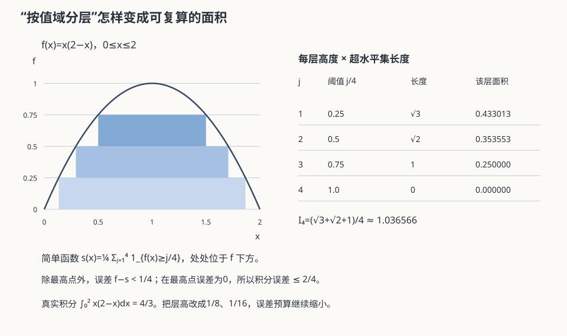

实变 II · Lebesgue 积分与三大收敛定理
Riemann 按定义域切条，Lebesgue 按值域切层——"数钱不按拿到的顺序，而按面额分堆"。换一个切法，可积函数的世界豁然开朗，且"积分与极限交换"获得了三条终极裁决（三大收敛定理）——数分 IV 里小心翼翼的一致收敛条件，从此多数场合可以退休。
1. 积分的三级定义

沿实变 I 的阶梯拾级而上：
- 简单函数 \(\varphi = \sum a_i \mathbb{1}_{E_i}\)：\(\int \varphi = \sum a_i\, m(E_i)\)（面额 × 张数）；
- 非负可测 \(f\)：\(\int f = \sup\{\int\varphi : 0 \leq \varphi \leq f,\ \varphi \text{ 简单}\}\)（下方简单函数的极限；允许 \(+\infty\)）；
- 一般可测 \(f\)：拆正负部 \(f = f^+ - f^-\)，\(\int f = \int f^+ - \int f^-\)；两者都有限称可积（\(f \in L^1\)），等价于 \(\int|f| < \infty\)——Lebesgue 可积天生是绝对可积（概率 IV 期望要求绝对收敛的真相：\(EX\) 就是 Lebesgue 积分）。
与 Riemann 的关系（两条定论）：R 可积 ⇒ L 可积且值相等（L 是 R 的扩张而非另起炉灶）；R 可积 \(\iff\) a.e. 连续（Lebesgue 判据——Riemann 积分的适用范围由 Lebesgue 理论精确刻画，颇有诗意）。Dirichlet 函数：R 不可积，L 积分 \(= 0\)（a.e. 为 0）。
零测集免责：a.e. 相等的函数积分相同——积分"看不见"零测集，\(L^1\) 里的函数本质上是"a.e. 等价类"。
2. 三大收敛定理（本页顶点，按强度排列）
定理 1（Levi 单调收敛，MCT） \(0 \leq f_n \uparrow f\)（单调升）⇒
——非负 + 单调，无需任何有界性。直接推论：非负项级数逐项积分永远合法 \(\int\sum = \sum\int\)（数分 IV 需一致收敛才敢做的事）。
定理 2（Fatou 引理） \(f_n \geq 0\) ⇒ \(\int \liminf f_n \leq \liminf \int f_n\)。 ——不等式版的兜底：极限函数的积分不会超过积分的下极限（"质量可以逃逸不会凭空产生"）。反例记一个：\(f_n = n\mathbb{1}_{(0, 1/n)}\)——逐点 \(\to 0\) 但 \(\int f_n \equiv 1\)：质量逃去了无穷（高度上）——Fatou 的 \(\leq\) 取严格号，也是下一条定理需要"控制"的原因。
定理 3（Lebesgue 控制收敛，DCT，使用率之王） \(f_n \to f\) a.e.，且存在可积的控制函数 \(g\)：\(|f_n| \leq g\) 对一切 \(n\)，则
——一个可积的"天花板"锁死质量逃逸，逐点收敛即可换序。对比数分 IV 的一致收敛：DCT 条件宽得多、验证容易得多（找个控制函数就行）。积分号下求导/取极限、特征函数的连续性（概率 IV）、期望的极限运算（概率 V）……全部由 DCT 背书。使用姿势：见到 \(\lim\int\) 先找控制函数，找到即通行。
3. Fubini 定理（重积分换序的最终裁决）
定理（Fubini–Tonelli） 乘积测度空间上：非负可测函数累次积分随便换序（Tonelli，无条件）；一般函数只要 \(\iint |f| < \infty\)（先用 Tonelli 验证这一条！）则换序合法且等于二重积分。
——数分 VI 那句"连续函数可换序"的成人版：先对 \(|f|\) 用 Tonelli 自检，再对 \(f\) 换序，两步走遍天下。概率 III 联合分布求边缘、卷积公式的合法性即由此。
4. 收官视野：微分与积分的和解
Newton–Leibniz 公式的 Lebesgue 终极版（陈述级）：单调函数 a.e. 可导（Lebesgue 定理——单调性强得惊人）；\(F(x) = \int_a^x f\,dt\) a.e. 可导且 \(F' = f\) a.e.；$F' $ 可积且 N–L 成立 \(\iff F\) 绝对连续——"微积分基本定理到底要什么条件"这个从数分 III 悬到现在的问题，最终答案是绝对连续性。反例名角：Cantor 函数（魔鬼阶梯——连续、单调、a.e. 导数为 0，却从 0 爬到 1；N–L 对它失效）。
🔗 衔接：概率论的全部积分（期望、密度、收敛定理）默认在 Lebesgue 意义下运行——概率 IV/V 的每次"取期望换极限"背后都是 DCT；下一页 \(L^p\) 空间把可积函数组织成 Banach/Hilbert 空间，交棒泛函分析。
5. 典型例题
例 1（DCT 标准应用） 求 \(\lim_n \int_0^1 \frac{n\sin(x/n)}{x(1 + x^2)}dx\)：被积 \(\to \frac{1}{1+x^2}\) 逐点；控制 \(|n\sin(x/n)| \leq x\) 给 \(|f_n| \leq \frac{1}{1+x^2} \in L^1\) ⇒ 换序，极限 \(= \arctan 1 = \frac{\pi}{4}\)。
例 2（逐项积分） \(\int_0^1 \frac{-\ln x}{1 - x}dx\)（Tonelli 演示）：展开 \(\frac{1}{1-x} = \sum x^n\)，非负 ⇒ 逐项积分合法：\(\sum_n \int_0^1 (-\ln x)x^n dx = \sum_n \frac{1}{(n+1)^2} = \frac{\pi^2}{6}\)——Basel 和（数分 IV）从一个积分里长出来。
例 3（质量逃逸辨认） \(f_n = \mathbb{1}_{[n, n+1]}\)：逐点 \(\to 0\)，\(\int f_n \equiv 1\)——质量逃向水平无穷；任何控制函数 \(g \geq \sup_n f_n = \mathbb{1}_{[1,\infty)}\) 不可积 ⇒ DCT 拒签，换序确实非法。定理的反例与定理同等重要。\(\blacksquare\)
下一页：把可积函数组织成空间——\(L^p\)、Hölder/Minkowski 与完备性，实变向泛函分析交棒。